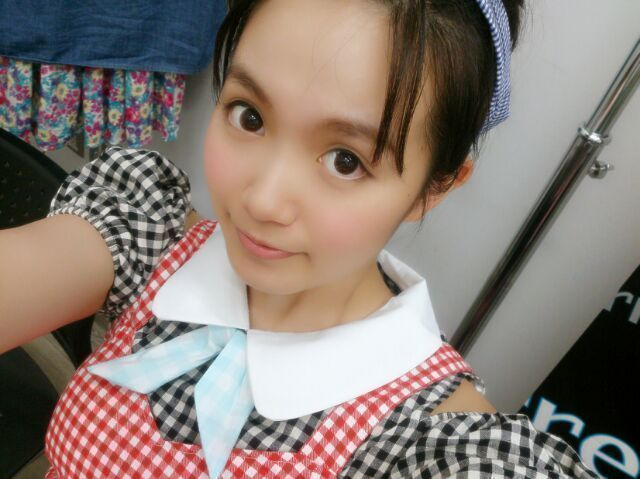
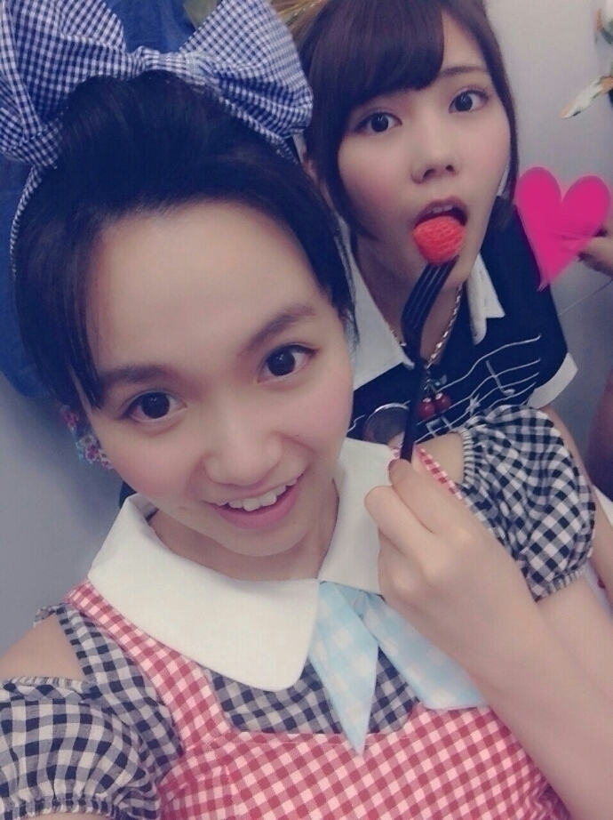

| 2014/10 05 Sun | ひめたん-OoO-その485 |
「私、起きる。」MV予告編が
公開されました～

これが噂のでこひめ
普段は前髪を分けることもなく
完璧におでこを守ってるつもりだからね
まライブとかでは崩れちゃうけどね
今回のすべての曲が
世に出揃ったところで
ひめたんの参加楽曲を確認！
Type-A 個人PV
Type-B 私、起きる。
Type-C あの日、僕は咄嗟に嘘をついた
あ、全部ばらばらみたい(´-ω-`)ぱー

Himetan♡
NOGIBINGO!3
10/6放送スタート＼(^o^)／
#1から楽しく収録してきたよ～
毎週月曜日25:29~
雑誌「OVERTURE」
創刊号でのぎのぎ特集をしてくださっています！
みんなの私服とかインタビューとか
たくさん載っているので
ぜひチェックしてみてね♪
雑誌「MARQUEE」
川後Pの......おっとっと
この先はまだ陽菜ちゃんブログに
書いてないんだね(笑)
とにかく一緒に載ってます♪
のぎ天
10月から毎週火曜日配信になります
#13は街ブラ！
チーム秋葉原頑張ったよ～
10/1より私たちのニューシングル
「何度目の青空か？」が
フルサイズの 配信 もスタートしました！
レコチョク：http://bit.ly/1rzMDEe
iTunes: http://bit.ly/1DUYpQ3

そして今日は
アンダーライブ初日でした\❁/
いよいよはじまった！
今日を皮切りに千秋楽まで
一人も欠けることなく突っ走ります！
そうそう、前回の日記で
たくさん質問来てたけどコールは
＼ひめたん／でお願いします♡
あまり詳しいことは言えないんだけどね
前回のライブとはまた違ったものに
なってるんじゃないかな～って
これみんな言ってるよね(笑)
まあまあ！なんていうか
ひめたん的には今日を無事に終わることできて
まずは一安心かな( ˇωˇ )ひ～めひめ～ひめ～
これからやーってひとは楽しみにしててね！
今夜は台風が近づいてくんだね(´・ω・｀)
明日晴れますように......♪

 団扇の文字ひめにしようと思うんだけど、
団扇の文字ひめにしようと思うんだけど、
ひめだけでも嫌じゃないかな？？
嫌じゃないしむしろ嬉しい！
ひめた～んももちろん嬉しいし
ひめ～って呼ばれるのも最近好きなの♡
ありがとう絶対見つけるね(っ´ω`c)
ひめたんがもし、
舞台で役を演じるとしたら、
犬、猿、雉、鬼、木のどれがいい？
幼稚園の年長さんの時に
桃太郎の劇をして
モモの片割れになったことならあるよ～
ひめたんは、私に似てるなぁって
アニメキャラは今までいた？
「たまこまーけっと」のあんこちゃんに
似てるってさゆりんごに前言われた♡
ひめたん結び最近はしてないなあ
 さゆりんごパンチがグーで
さゆりんごパンチがグーで
ひめたんびーむがチョキだとしたら
パーはなんだろ？
んーーーーななせまる！
これしか＼(^o^)／
乃木坂じゃんけん＼(^o^)／
ひめたん円周率円周率(^o^)／
3.1415923575
あー限界。
この続きはググらんとわからにゃー
次38？あってる？誰かー
ひめたんの日記の
コメント欄下２ケタに46を踏んだ方へ
手書きでコメ返するコーナー
＼ ひめたん46 ／


いつもたくさんのコメント
ありがとうございます
みんなのアニメトーク面白い♡
コメント観てたらさらに
チェックしなきゃな作品が増えたよ～
ラブライブえりち推しだよー
ことりちゃんも好き(・8・)
他にも、エンタメの感想とか
めーるのお返事とか
全部全部嬉しい！
時間かけても、全部読んでから
新しい日記を書くようにしてるんだー♪
そうそう、ろってぃーのブログは見たー？
ひめたんびーむに対抗する技を
募集中なんだって～
ひとつ言っておくと
ひめたんびーむは結構強力よ♡♡
でもろってぃーといつか
必殺技でバトルとかやってみたい(笑)
みんなで一緒に考えてみよ！
(＊´・ω・＊)
コメント(1068)
2014/10/05 23:36